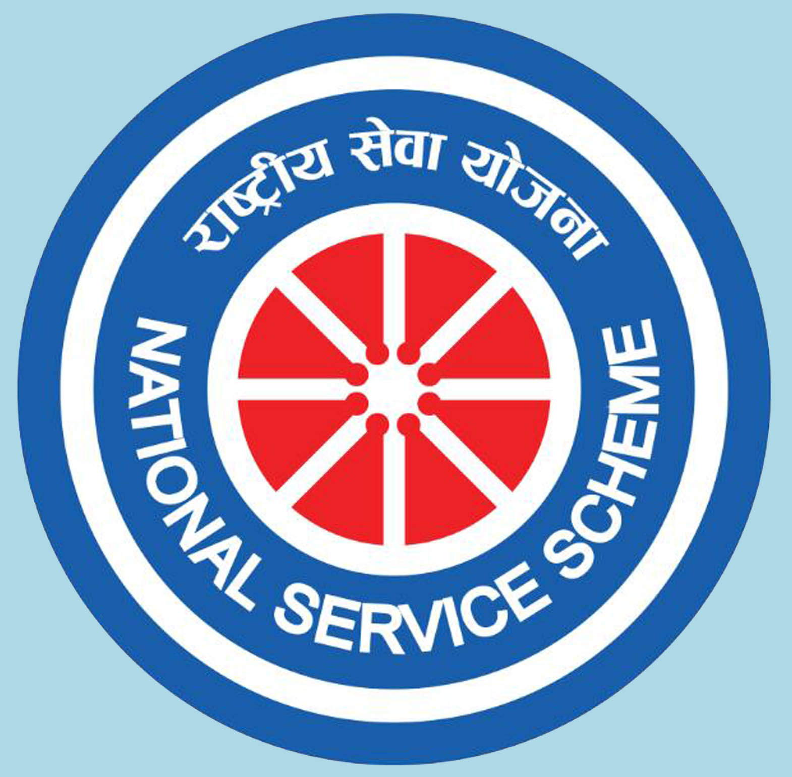

National Service Scheme |
|
National Service Scheme is a student – centered programme and it is complementary to education.
It is a noble experiment in academic extension. It inculcates the spirit of voluntary work among
students and teachers through sustained community interaction. It brings our academic institutions
closer to the society. It is a link between the campus and community, the college and village,
knowledge and action. The overall aim of NSS is the Personality Development of students through
community service. It gives an extension dimension to Higher Education system and orients the
student youth to community service.
National Service Scheme, popularly known as NSS, was formally launched on 24th September, 1969, the birth centenary of the Father of the Nation. Starting with an enrolment of 40000 students in 37 Universities covering all states, the coverage of NSS students increased to about 3.8 Million (2016-17) 396 universities. 16331 College/Technical institutions. |
 |
|
The NSS symbol is embossed on the NSS badge. The NSS volunteers wear it while undertaking any programme of community service. The Konark wheel in the symbol has eight bars which represent the 24 hours of the day. Hence, the badge reminds the wearer to be in readiness for service of the nation round the clock i.e. for 24 hours. The red colour in the badge indicates that the NSS volunteers are full of blood i.e. lively, active, energetic and full of high spirit. The navy blue colour indicates the cosmos of which the NSS is a tiny part, ready to contribute its share for the welfare of the mankind. |
|
|
NSS Advisory Commitee:
|